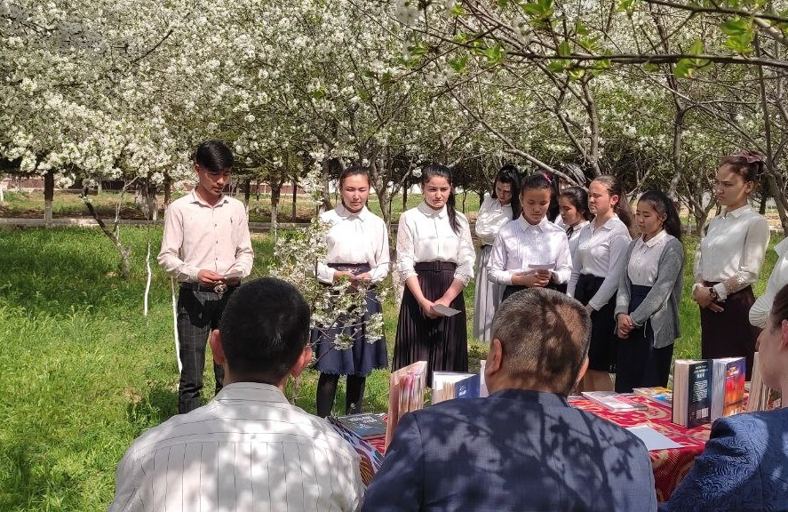
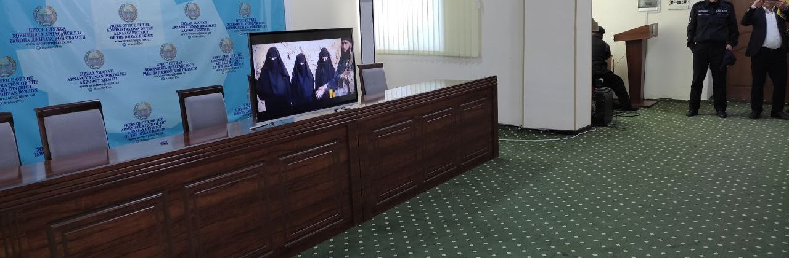
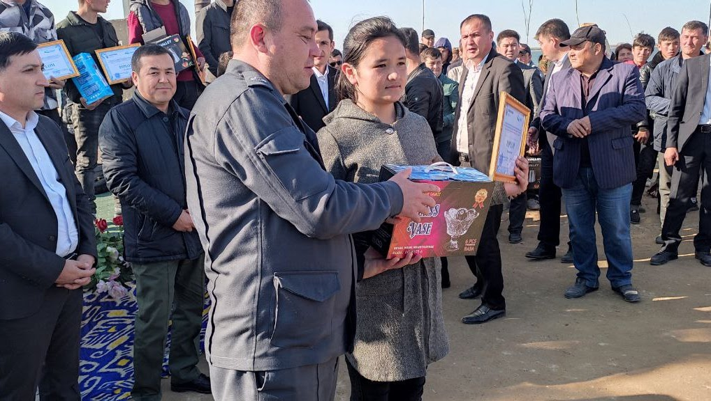
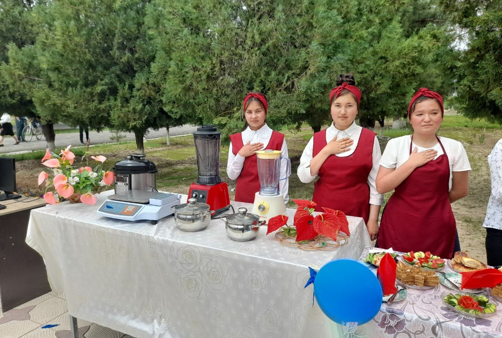
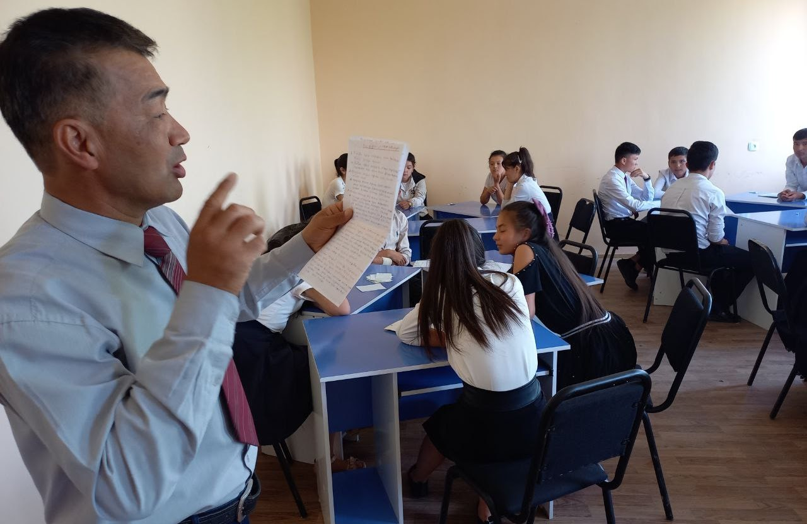
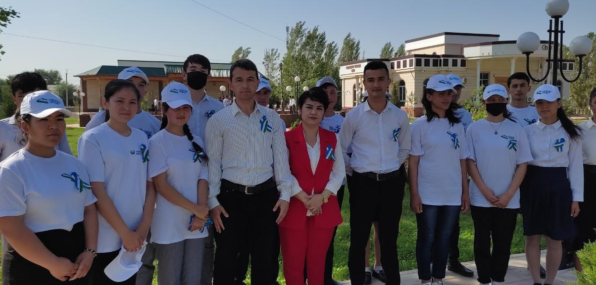

"Besh tashabbusi" doirasida Kitobxonlik tadbiri bo'lib o'tdi
11.04.2022
Arnasoy tuman Kasb-hunar maktabida "Besh tashabbusi" doirasida Kitobxonlik tadbiri
bo'lib o'tdi. Tadbirda guruhlardan eng faol kitobxon o'quvchilar tanishtiruv, baxru-bayt, tezkor savol
javob shartlari asosida o'zaro bellashdi. Tadbir barchada yaxshi taassurot qoldirdi va kitobxonlikka
bo'lgan qiziqishlarni yanada oshirdi.

Diniy ekstrimizm mavzusida tadbir bo'lib o'tdi
05.04.2022
Arnasoy tuman hokimligi binosida Arnasoy tuman kasb-hunar maktabi o'qituvchi va
o'quvchilari, tuman ichki ishlar xodimlari, din ishlari bo'yicha ma'sul xodimlar ishtirokida Terrorizm
, Diniy ekstrimizm mavzusida tadbir bo'lib o'tdi. Tadbir so'nggida kun mavzusi yuzasidan video film
qo'yib berildi va bu filmdan ishtirokchilar o'zlariga kerakli xulosalarni olishdi.

Aydar Arnasoy ko'lida Yoshlar festivali
bo'lib o'tdi
30.03.2022
Bugun 30.03.2022-yil Arnasoy tumanida Tuman Hokimligi,Yoshlar Ishlari
agentligi,mahallalar va ta'lim muassasalari hamkorligida Aydar Arnasoy ko'lida Yoshlar festivali
bo'lib o'tdi. Festivalda tumandagi barcha mahallalardan uyushmagan yoshlar hamda o'quvchi yoshlar ham
ishtirok etishdi. Jumladan Arnasoy tuman kasb hunar maktabining o'qituvchi va o'quvchilari ham faol
ishtirok etishdi. Festivalda turli xil sport o'yinlari, varraklar sayli, milliy hunarmandchilik,
rassomchilik, yosh kitobxon, milliy lapar va qo'shiqlar hamda milliy taomlar tayyorlash bo'yicha
musobaqalar o'tkazildi. Ushbu Yoshlar festivalida Arnasoy tuman kasb hunar maktabining iqtidorli
o'quvchilari ham faxrli o'rinlarni egallashdi.

ARNASOY TUMAN KASB-HUNAR MAKTABIDA "OCHIQ ESHIKLAR" KUNI BO'LIB O'TDI
2022
ARNASOY TUMAN KASB-HUNAR MAKTABIDA "OCHIQ ESHIKLAR" KUNI BO'LIB O'TDI

Fizika fani bo'yicha o'quvchilar o'rtasida Zakovat o'yini tashkil etildi
30.04.2022
Arnasoy kasb-hunar maktabida joriy yulning 30-aprel kuni fizika fani bo'yicha o'quvchilar o'rtasida
Zakovat o'yini tashkil etildi. Tadbirda o'quvchilar to'rt guruhga bo'linib (Evrika,Nyuton, Aristotel,
Paskal) bellashuv olib bordilar. O'yin oxirida Evrika guruhi birinchi o'rinni, Nyuton guruhi ikkinchi
o'rinni, Paskal guruhi uchinchi o'rinni qo'lga kiritishdi. Zakovat intellektual o'yini o'quvchilar
bahslariga boy va qiziqarli o'tdi.

"Xotira va qadrlash kuni" munosabati bilan Motamsaro Ona haykali poyiga
gulchambarlar qo'yildi
07.05.2022
2022-yil 7-may kuni Arnasoy tumani xotira maydonida, "Xotira va qadrlash kuni" munosabati bilan
motamsaro ona haykali poyiga gulchambarlar qo'yilib, uchrashuv va davra suhbatlari bo'lib o'tdi.
Tadbirda Arnasoy tuman kasb-hunar maktabining yoshlar ittifoqi sardorlari va o'qituvchilari barcha
faxriy mehmonlar va tadbir ishtirokchilariga "Sharaf lentalari"ni taqishdi.